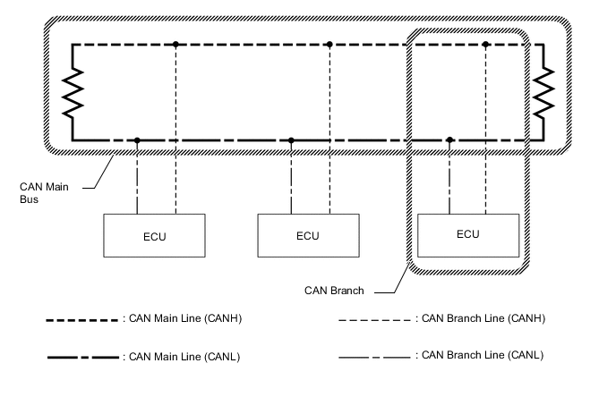
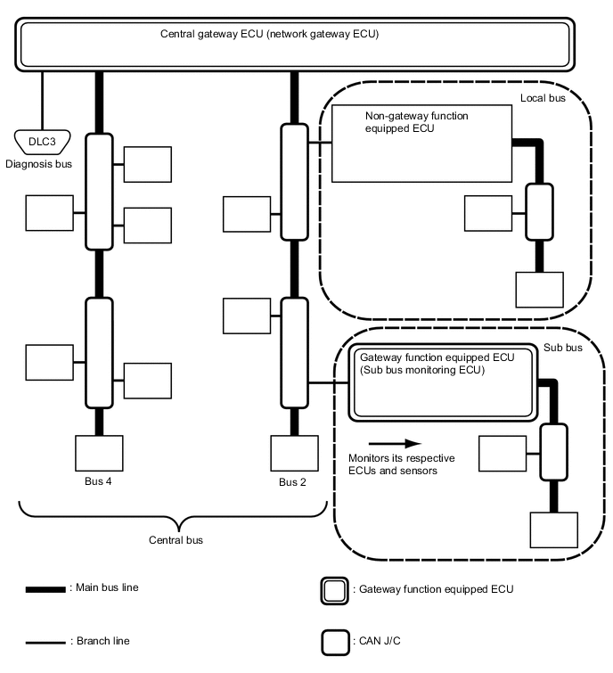

BRIEF DESCRIPTION
The Controller Area Network (CAN) is a serial data communication system for real time application. It is a vehicle multiplex communication system which has a high communication speed and the ability to detect malfunctions.

Using the CANH and CANL bus lines as a pair, CAN communication is performed using a voltage differential. (A base voltage is applied to the pair of lines and a voltage differential is created when communicating.)
Many ECUs or sensors installed to the vehicle operate by sharing information and communicating with each other.
2 resistors which are necessary for communication are used in a CAN bus main line.
DEFINITION OF TERMS

Central bus
The central bus is a term used to describe all buses directly connected to the central gateway ECU (network gateway ECU).
Tech Tips
A bus is displayed as Bus on the "Communication Bus Check" screen of the GTS.
Sub bus
A sub bus is a bus that has a gateway function equipped ECU in order to communicate with the central bus and other sub buses.
Tech Tips
A sub bus is displayed as Sub bus on the "Communication Bus Check" screen of the GTS.
When Sub bus is selected on the "Communication Bus Check" screen, ECUs and sensors connected to non-CAN networks such as LIN may also be displayed in addition to the ECUs and sensors connected to sub buses in the CAN network.
Local bus
A local bus is a bus that does not have the ability to communicate with other buses. ECUs and sensors on a local bus can only communicate with other ECUs and sensors on the same bus.
CAN J/C
A CAN junction connector is a connector that connects branch lines to a main bus.
Main bus
A main bus line is the wire harness that runs between the 2 terminating resistors of a bus.
Branch
A branch line is a wire harness that connects an ECU or sensor to a main bus line.
Terminating resistors
Terminating resistors which maintain a stable signal inside the CAN bus are installed. 2 resistors of 120 Ω each located at each end of the bus are necessary.